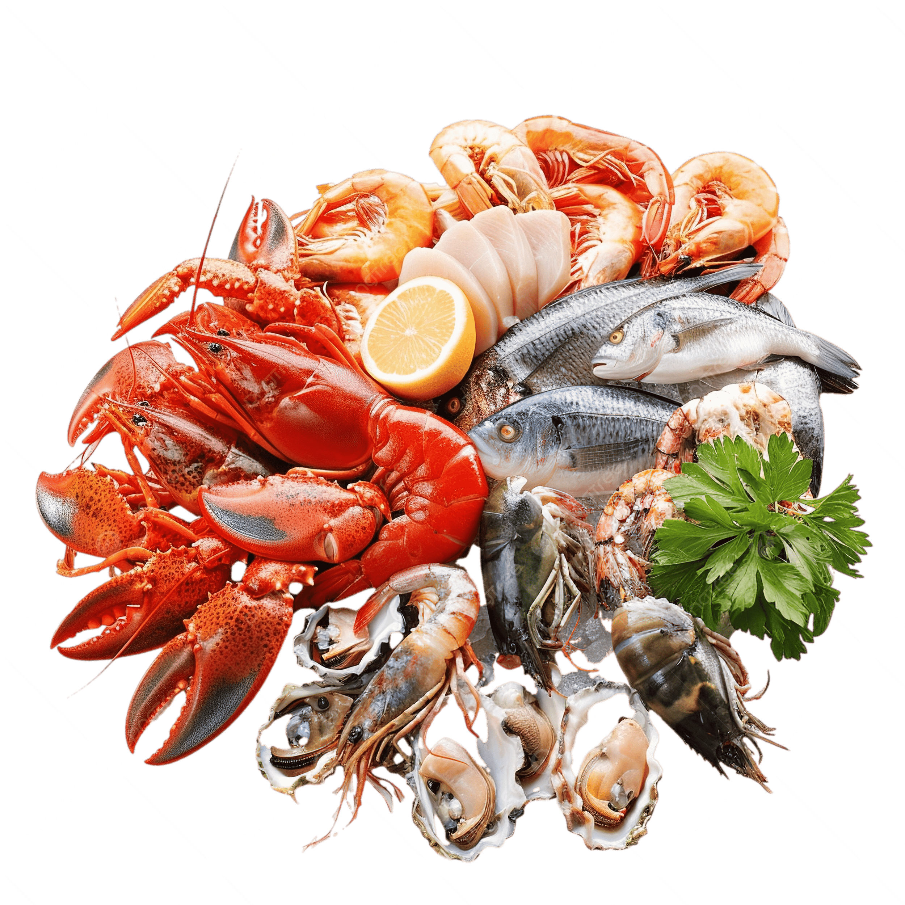
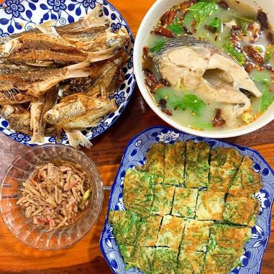
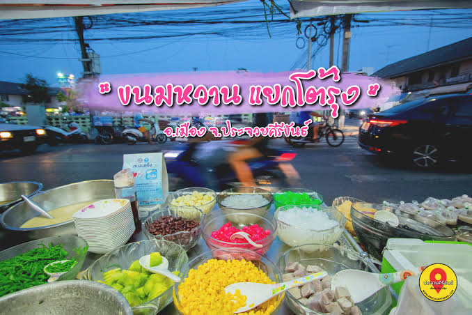

อาหารอร่อยเมืองประจวบฯ
มาเที่ยวประจวบคีรีขันธ์ต้องลองชิมอาหารท้องถิ่นและอาหารทะเลสดใหม่
อาหารทะเล

อาหารทะเลสดใหม่ เช่น กุ้ง ปู ปลา และปลาหมึก มีให้เลือกหลากหลายเมนู
อาหารพื้นบ้าน

อาหารพื้นบ้านรสชาติอร่อย มีเอกลักษณ์เฉพาะตัว เหมาะสำหรับผู้ที่ต้องการสัมผัสวิถีชีวิตของคนในชุมชน
ขนมหวานและเครื่องดื่ม

มีขนมหวาน ผลไม้ และเครื่องดื่มเย็น ๆ ให้เลือกชิมระหว่างเดินทาง
คำแนะนำในการเลือกอาหาร
- เลือกร้านอาหารที่สะอาด
- ตรวจสอบราคาก่อนสั่งอาหาร
- เลือกอาหารที่ปรุงสุกใหม่
- ช่วยอุดหนุนร้านค้าในชุมชน